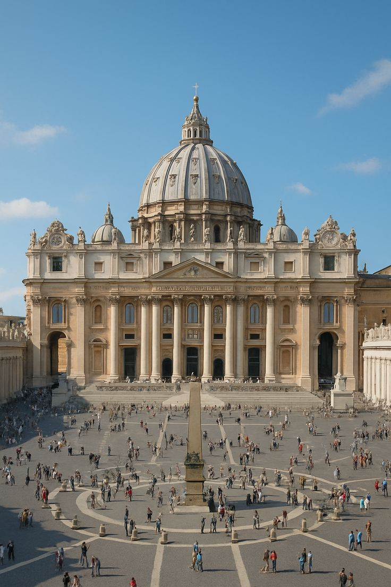
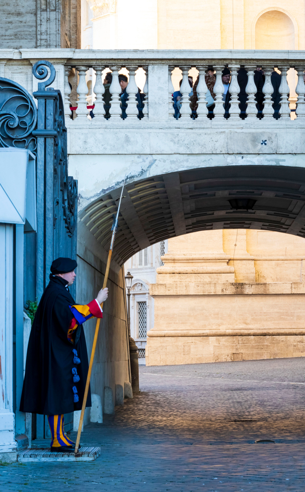
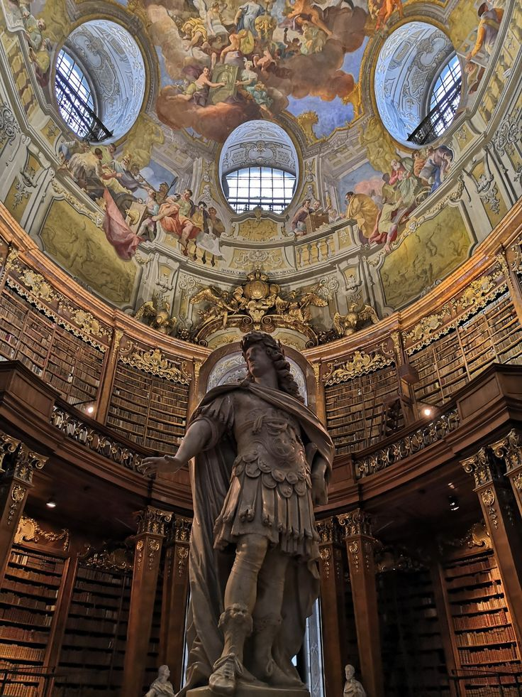
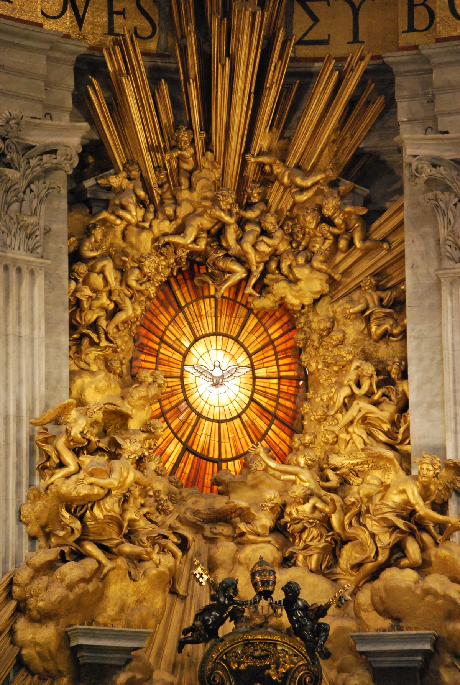

~0.49km²
The world's smallest internationally recognized independent state — a sovereign enclave within the city of Rome.
Area
◇

An enclave within Rome, Vatican City stands as the spiritual and administrative center of the Roman Catholic Church — a living monument to two millennia of civilization.
Est. 1929 · Lateran Treaty

The world's smallest internationally recognized independent state — a sovereign enclave within the city of Rome.

A unique community of clergy, Swiss Guards, and Vatican staff — constituting the planet's smallest national population.

Latin is the official tongue of law and sacred doctrine; Italian governs everyday civil and administrative affairs.

Vatican mints its own euro coins bearing papal imagery — among the rarest and most prized numismatic collectibles.
Source: Holy See · Vatican Information Service · MMXXVI